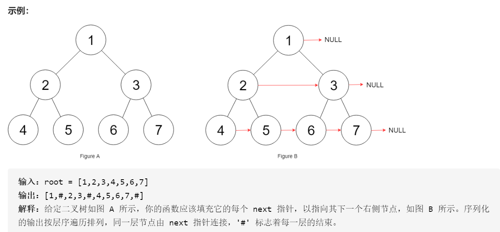
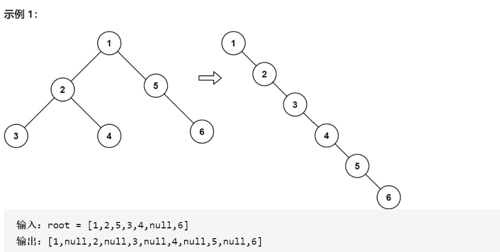

二叉树
回溯、动归、分治算法，其实都是树的问题。图的处理，也是可以转化成多叉树，多了个有环的特点。
快速排序可以理解为二叉树的前序遍历(根左右)，归并排序可以理解为二叉树的后续遍历(左右根)
快速排序的逻辑是，若要对nums[lo..hi]进行排序，我们先找一个分界点p，通过交换元素使得nums[lo..p-1]都小于等于nums[p]，且nums[p+1..hi]都大于nums[p]，然后递归地去nums[lo..p-1]和nums[p+1..hi]中寻找新的分界点，最后整个数组就被排序了。
void sort(int[] nums, int lo, int hi) {
/****** 前序遍历位置 ******/
// 通过交换元素构建分界点 p
int p = partition(nums, lo, hi);
/************************/
sort(nums, lo, p - 1);
sort(nums, p + 1, hi);
}归并排序的逻辑，若要对nums[lo..hi]进行排序，我们先对nums[lo..mid]排序，再对nums[mid+1..hi]排序，最后把这两个有序的子数组合并，整个数组就排好序了。
void sort(int[] nums, int lo, int hi) {
int mid = (lo + hi) / 2;
sort(nums, lo, mid);
sort(nums, mid + 1, hi);
/****** 后序遍历位置 ******/
// 合并两个排好序的子数组
merge(nums, lo, mid, hi);
/************************/
}递归算法的出口, 对于树来说, 出口就是node == nullptr。
二叉树的定义
struct TreeNode {
int val;
TreeNode *left;
TreeNode *right;
TreeNode() : val(0), left(nullptr), right(nullptr) {}
TreeNode(int x) : val(x), left(nullptr), right(nullptr) {}
TreeNode(int x, TreeNode *left, TreeNode *right) : val(x), left(left), right(right) {}
};填充每个节点的下一个右侧节点指针

二叉树的问题难点在于，如何把题目的要求细化成每个节点需要做的事情，但是如果只依赖一个节点的话，肯定是没办法连接「跨父节点」的两个相邻节点的。
Node* connect(Node* root) {
if (!root)
return root;
recursion(root->left, root->right);
return root;
}
void recursion(Node* l, Node* r) {
// l或者r为nullptr, 都应该退出之
if (!l || !r) {
return;
}
l->next = r;
recursion(l->left, l->right);
recursion(r->left, r->right);
recursion(l->right,r->left);
}二叉树展开成链表
给你二叉树的根结点 root ，请你将它展开为一个单链表：展开后的单链表应该与二叉树 先序遍历 顺序相同。

以下流程：
将root的左子树和右子树拉平。
将root的右子树接到左子树下方，然后将整个左子树作为右子树。
class Solution {
public:
void flatten(TreeNode* root) {
if (!root)
return;
/// 左右子树递归
flatten(root->left);
flatten(root->right);
/// 左右子树已经被拉直
TreeNode* l = root->left;
TreeNode* r = root->right;
/// 重设置左右子树
root->left = nullptr;
root->right = l;
/// 右子树连接到左子树尾部
TreeNode* p = root;
while (p->right != nullptr) {
p=p->right;
}
p->right = r;
}
};这个和归并排序原理好类似，相当于二叉树左右根向上拼接。
判断二叉搜索树
leetcode 98. 验证二叉搜索树
BST 的定义，root的整个左子树都要小于root.val，整个右子树都要大于root.val。这时可以辅助函数，增加函数参数列表，将这种约束传递给子树的所有节点
boolean isValidBST(TreeNode root) {
return isValidBST(root, null, null);
}
class Solution {
public:
bool isValidBST(TreeNode* root) {
return isValidBST(root ,nullptr, nullptr);
}
bool isValidBST(TreeNode*root, TreeNode* min, TreeNode* max) {
if (root == nullptr)
return true;
if (min != nullptr && root->val <= min->val)
return false;
if (max != nullptr && root->val >= max->val)
return false;
// 限定左子树的最大值是 root->val，右子树的最小值是 root->val
return isValidBST(root->left, min, root)
&& isValidBST(root->right, root, max);
}
};